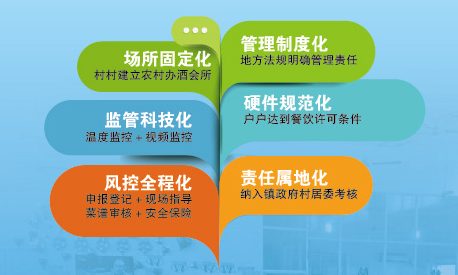
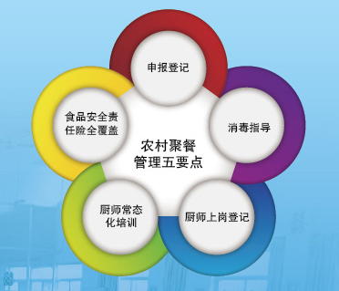
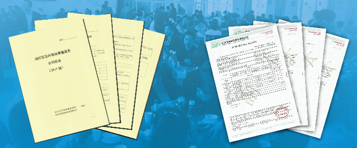

返回查看更多
返回查看更多
完善“互联网+食品安全”监管方式，推进政府监管数据与企业数据的对接和信息共享，实现食品安全信息追溯，努力提升基于大数据的科学监管和风险防范能力。
平台覆盖了五大类12个业务系统；
汇集涉及25万监管相对人的480万条信息；
形成1.04亿条追溯信息
2012年,市政府令第97号公布《上海市餐厨废弃油脂处理管理办法》。
2017年，《上海市食品安全条例》规定对餐厨废弃油脂实行资源化利用。
餐饮单位安装油水分离器集中收集，收运队伍实行“四个统一”管理，并将餐厨废弃油脂交付专业单位处置，确保资源回收利用。
建立餐饮单位“一户一档”和餐厨废弃油脂信息管理平台，运用电子识别卡和实时监控系统，确保收运全过程得到严密监控。
多方合作，联合创新，实现“混合柴油燃料车用关键技术及应用”课题成果转化，研制成餐厨废弃油脂制生物柴油混合燃料。
本市106辆公交车、环卫车使用符合技术要求的餐厨废弃油脂制生物柴油，累计运行时长达3年7个月、运行里程1361.51万公里。
具体体验互动在展板
1.实施精细化管理，采取申报登记、消毒指导、厨师上岗登记、厨师常态化培训、食品安全责任险全覆盖等措施，加强农村集体聚餐管理。
2.全覆盖监管：115个街镇， 830户农村聚餐点；全过程管理：卫生管理员1488人，厨师8258人。
3.《上海市食品安全条例》明确农村集体聚餐食品安全的责任主体，明确签订食品安全协议，实施现场指导等措施。
4.实施“五个化”管理特色
5.农村聚餐管理五要点
6.农村集体聚餐服务合同范本、安信农保食品安全责任保险单

返回查看更多